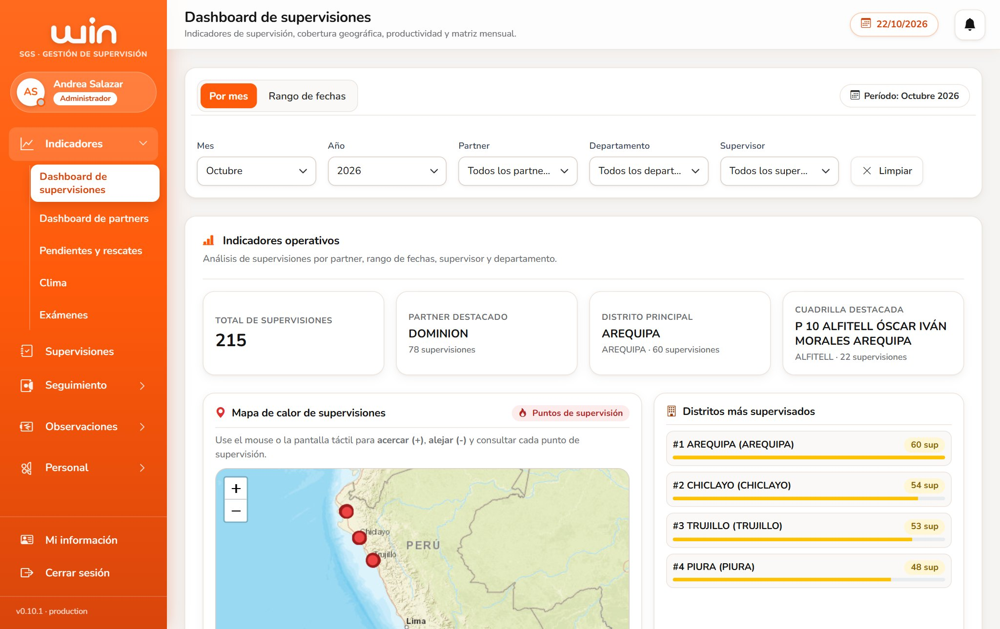
SGS reúne en un solo lugar la supervisión de campo de las provincias: lo que hace cada supervisor, cómo trabajan los partners y el estado de las cuadrillas.
La foto del mes: cuánto se supervisó, dónde y con qué cuadrillas.
Cómo responden los partners a lo que se les transfiere y a sus observaciones.
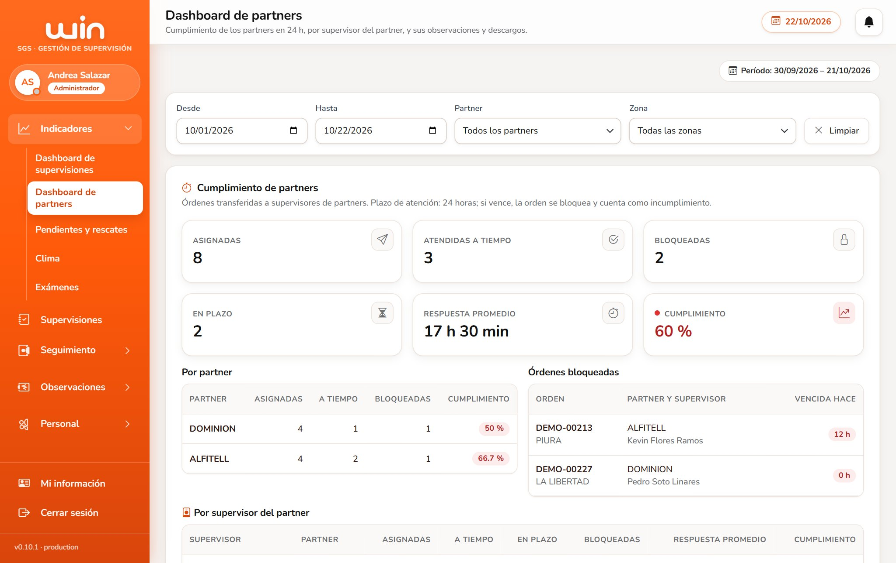
El recorrido de cada cancelación cargada por Excel, de la carga al cierre.
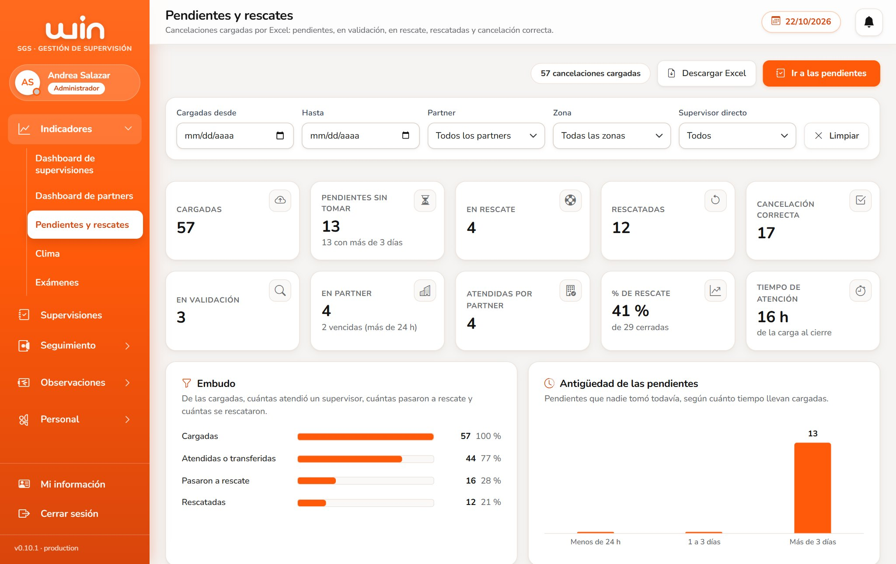
Las lluvias que avisan los supervisores, por zona y por día.
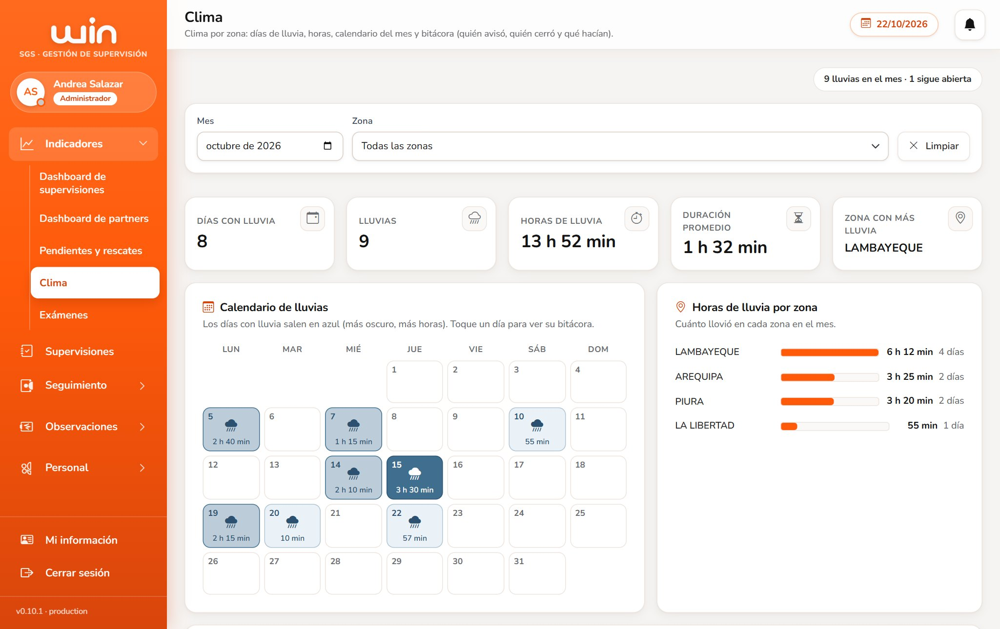
Evaluaciones por link, sin cuentas para los técnicos: ingresan con su DNI.
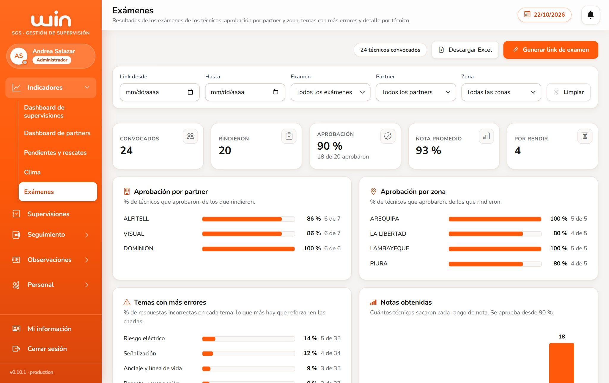
Qué está haciendo cada supervisor directo, en tiempo real.
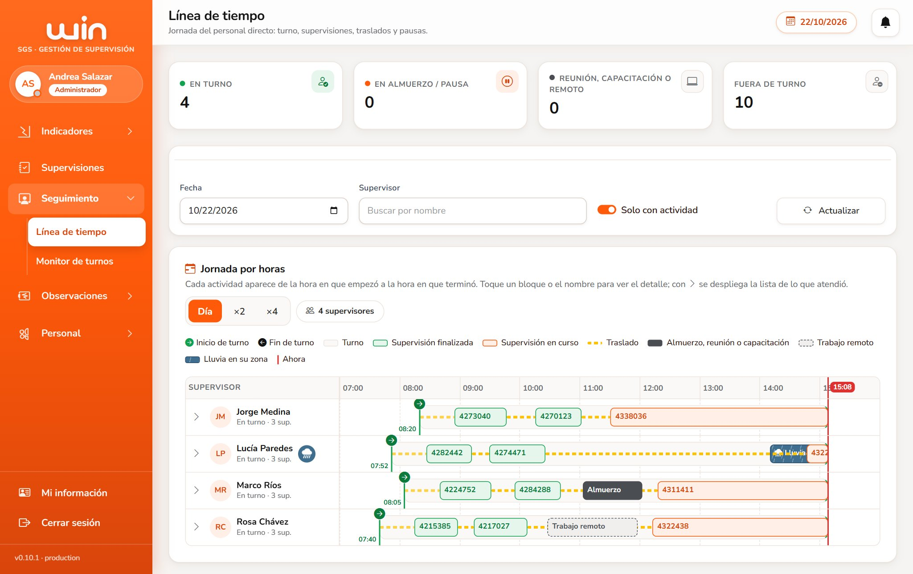
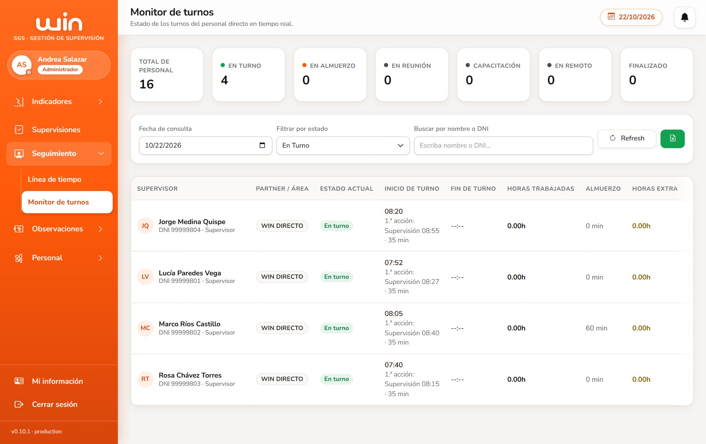
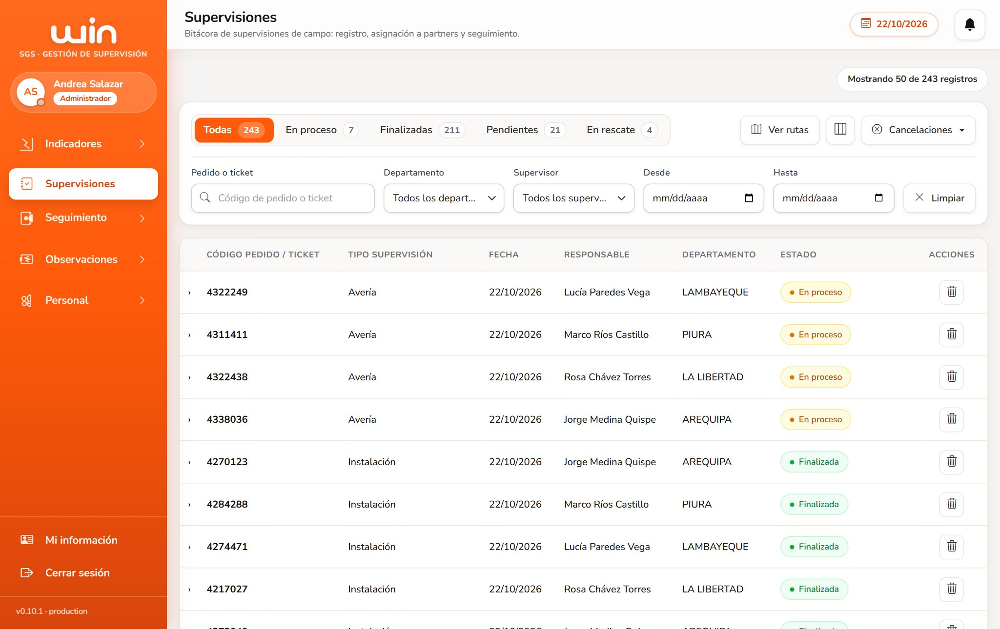
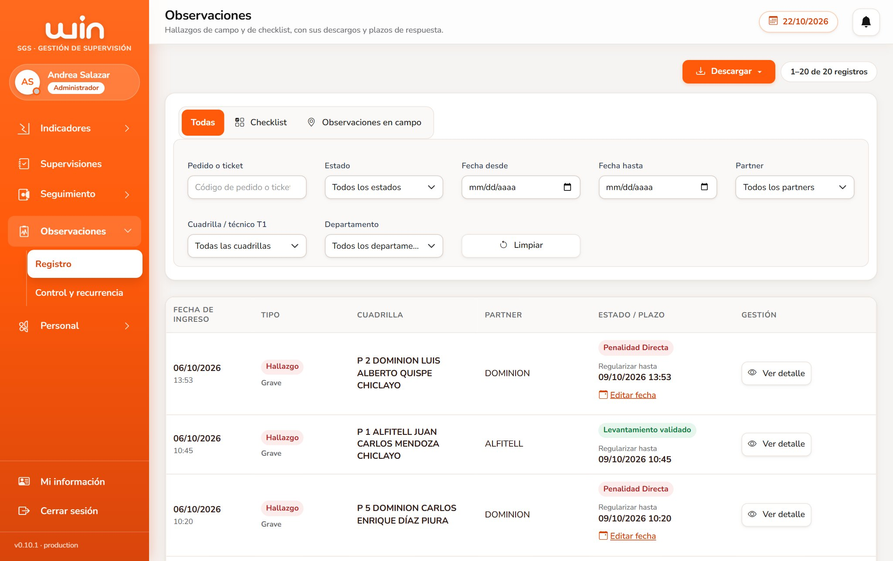
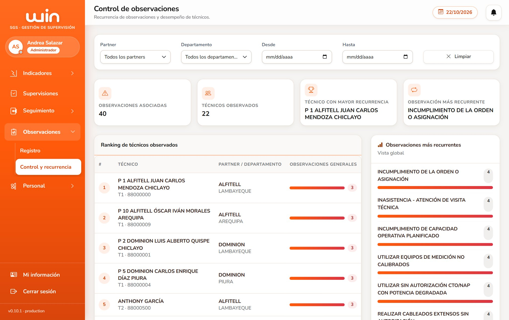
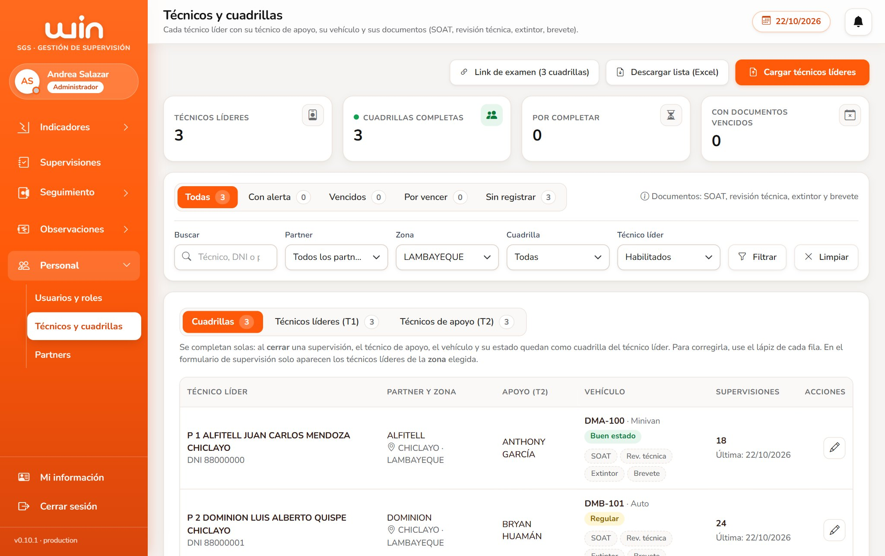
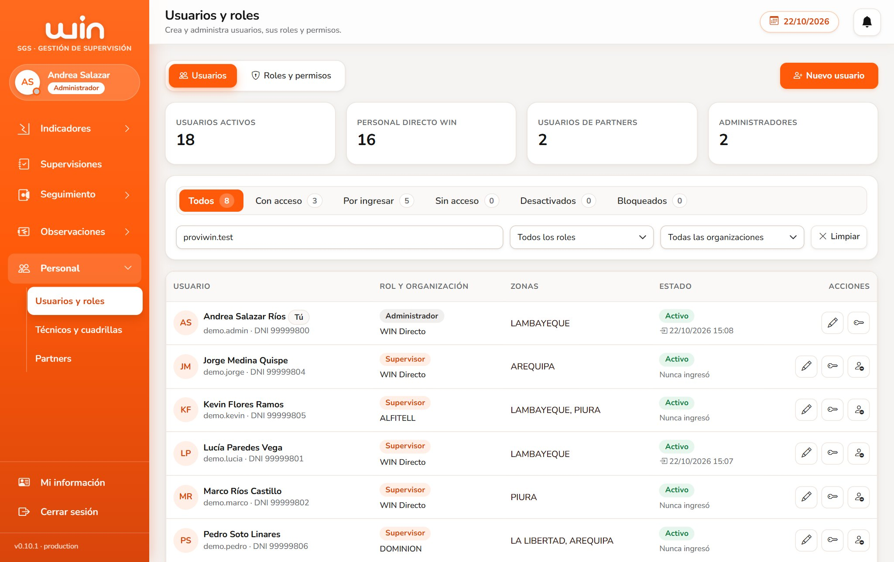